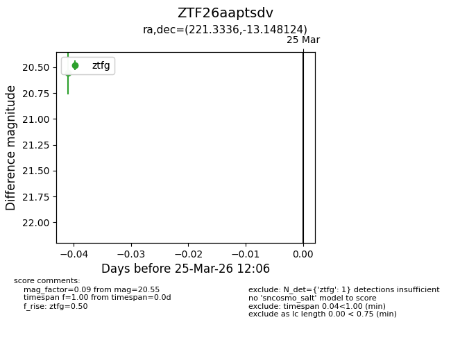
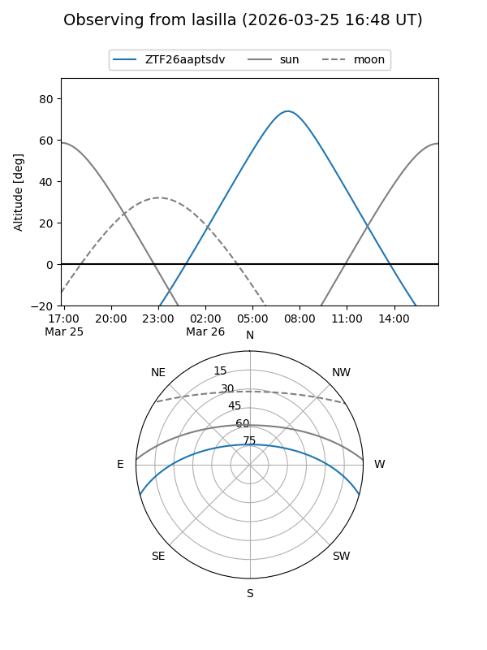
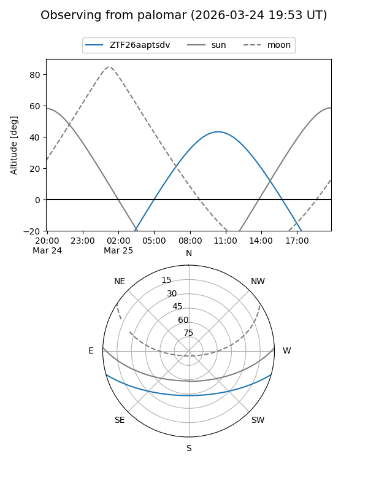

ZTF26aaptsdv
Target ZTF26aaptsdv at 2026-03-25 12:09
Aliases and brokers:
FINK: link
Lasair: link
ALeRCE: link
alt names
ZTF26aaptsdv (ztf,fink_ztf)
Coordinates:
equatorial (ra, dec) = 221.3336,-13.14812
equatorial (HMS+DMS) = 14:45:20.06,-13:08:53.25
galactic (l, b) = (341.0007,+41.15494)
Flags:
Photometry:
last ztfg=20.55
1 ztfg detections
Lightcurve

Visibility


Additional plots